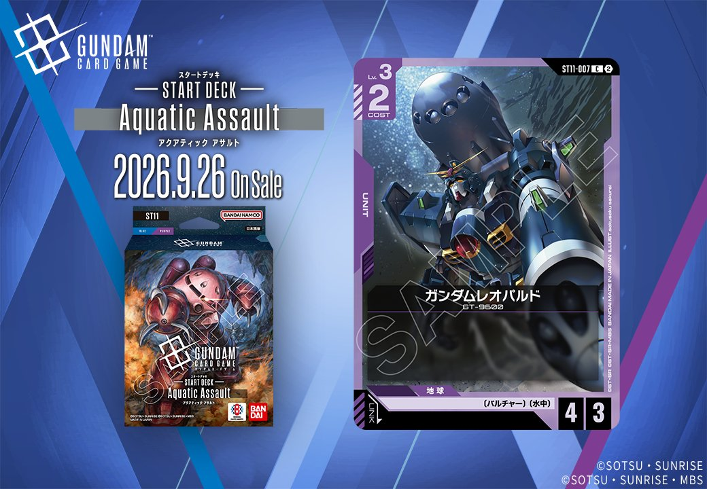
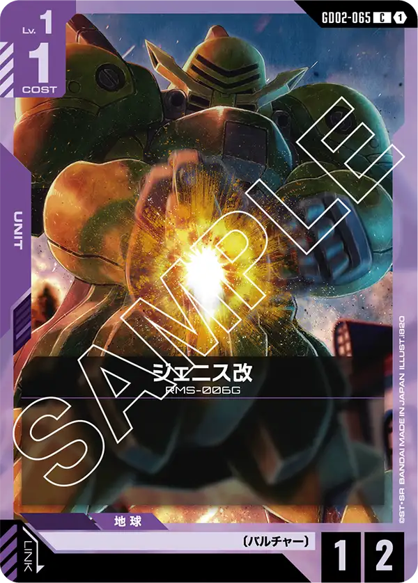

今回は2枚のUNITを紹介します。GD06「Stardust Trails」からは赤の「百式」（GD06-046）が登場し、特徴に「ガンダムチーム」を持つPILOTとのリンクを備え、2026年10月31日発売となります。ST11収録の紫の「ガンダムレオパルド」（ST11-007）は2026年9月26日発売です。

百式 (GD06-046)
| 色 | 赤 | タイプ | UNIT |
| Lv | 4 | コスト | 3 |
| AP | 4 | HP | 3 |
| 特徴 | 〔エゥーゴ〕、〔ガンダムチーム〕 | ||
| リンク条件 | 特徴にガンダムチームを持つPILOT | ||
効果: 【アタック時】このユニット以外の〔ガンダムチーム〕の自分のユニット1つを選ぶ。このターン中、それをAP+2する。
百式(GD06-046)はCOST3でAP4/HP3、【アタック時】に自身以外の〔ガンダムチーム〕の自分のユニット1つをAP+2する赤のLv.4ユニットです。同日公開のΖガンダム(GD06-035)を対象にすればAP+2でバトルダメージによる破壊を狙いやすくなり、その破壊を起点にΖ側の相手ユニットへ2ダメージを与える効果へつなげやすくなります。〔ガンダムチーム〕を持つパイロットとのリンク対応で、2026年10月31日発売のカードです。

ガンダムレオパルド (ST11-007)
| 色 | 紫 | タイプ | UNIT |
| Lv | 3 | コスト | 2 |
| AP | 4 | HP | 3 |
| 特徴 | 〔バルチャー〕、〔水中〕 | ||
ガンダムレオパルド(ST11-007)はCOST2でAP4/HP3の効果なし(バニラ)ユニット。COST2としてはAPが高く、序盤からアタッカーとして殴りに行ける攻撃寄りのステータスが持ち味です。 〔バルチャー〕〔水中〕を持ち、リンクはなし。2026-09-26発売のST11収録で、効果を持たない分は素の打点で評価する形になります。
関連カード
-
 Ζガンダム(GD06-035)NEW赤系 — 同色・共通特徴: エゥーゴ、ガンダムチーム（新カード）
Ζガンダム(GD06-035)NEW赤系 — 同色・共通特徴: エゥーゴ、ガンダムチーム（新カード） -
 格闘戦(ST03-013)赤系デッキ内採用率21.7% (1046デッキ)
格闘戦(ST03-013)赤系デッキ内採用率21.7% (1046デッキ) -
 GQuuuuuuX（オメガ・サイコミュ起動時）(GD03-034)赤系デッキ内採用率16.2% (781デッキ)
GQuuuuuuX（オメガ・サイコミュ起動時）(GD03-034)赤系デッキ内採用率16.2% (781デッキ) -
 資源衛星パラオ(GD01-128)赤系デッキ内採用率14.6% (705デッキ)
資源衛星パラオ(GD01-128)赤系デッキ内採用率14.6% (705デッキ) -
 戦技の向上(GD03-109)赤系デッキ内採用率13.1% (633デッキ)
戦技の向上(GD03-109)赤系デッキ内採用率13.1% (633デッキ) -
フリーデン(GD02-127)紫系デッキ内採用率0.5% (23デッキ)
-
 ガンダムエアマスター(GD02-059)紫系デッキ内採用率0% (2デッキ)
ガンダムエアマスター(GD02-059)紫系デッキ内採用率0% (2デッキ) -

ジェニス改(GD02-065)紫系デッキ内採用率0% (1デッキ) -
 ガンダムDX(GD04-049)紫系デッキ内採用率0% (1デッキ)
ガンダムDX(GD04-049)紫系デッキ内採用率0% (1デッキ) -
 ガンダムX(GD02-053)紫系デッキ内採用率0% (1デッキ)
ガンダムX(GD02-053)紫系デッキ内採用率0% (1デッキ)